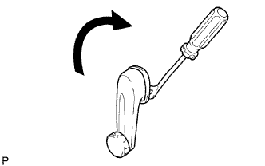

NẸP DỌC CỬA TRƯỚC > THÁO |
| 1. NGẮT CÁP ÂM RA KHỎI ẮC QUY |
| 2. THÁO CỤM TAY QUAY BỘ NÂNG HẠ KÍNH CỬA TRƯỚC (Không có cửa sổ điện) |
|  |
Hãy lồng dụng cụ tháo kẹp giữa tấm và ốp.
Giữ nguyên vị trí như trước đó và quay tay nắm cùng chiều kim đồng hồ để tháo nó.
| 3. THÁO TẤM ỐP GIÁ BẮT KHUNG DƯỚI CỬA TRƯỚC TRÁI |
 |
Dùng tôvít, nhả khớp 3 kẹp và tháo miếng ốp trang trí.
| 4. THÁO TẤM ĐỠ TRÊN TỰA TAY TRƯỚC TRÁI |
 |
Tháo vít.
Dùng một tô vít, nhả khớp 2 kẹp và 8 vấu. Tháo đế tựa tay cùng với công tắc chính nâng hạ cửa sổ theo hướng như được chỉ ra bởi mũi tên trong hình vẽ.
w/ Cửa sổ điện:
Ngắt giắc của công tắc.
 |
w/ Cửa sổ điện (phía người lái):
Tháo 3 vít và công tắc chính nâng hạ cửa sổ ra khỏi chỗ tựa tay.
 |
w/ Cửa sổ điện (phía hành khách trước):
Dùng tô vít, tách 2 khóa cài và ngắt rơle tích hợp ra khỏi hộp đầu nối khoang động cơ.
| 5. THÁO ỐP TRANG TRÍ CỬA TRƯỚC TRÁI |
 |
Tháo vít.
Dùng tôvít, nhả khớp 9 kẹp và tháo tấm ốp.
Dùng tôvít, nhả khớp 7 vấu và tháo gioăng bên trong.
| 6. THÁO CỤM GƯƠNG CHIẾU HẬU NGOÀI TRÁI |
 |
w/ Power Mirror Control System:
Disconnect the mirror connector labeled A.
Remove the 3 nuts.
Push down the claw and remove the outer rear view mirror.
| 7. THÁO GIOĂNG NGOÀI KÍNH CỬA TRƯỚC TRÁI |
 |
Hãy dán băng dính bảo vệ phía dưới gioăng.
Dùng dụng cụ tháo nẹp, nhả khớp 4 vấu ra khỏi gioăng như trong hình vẽ.